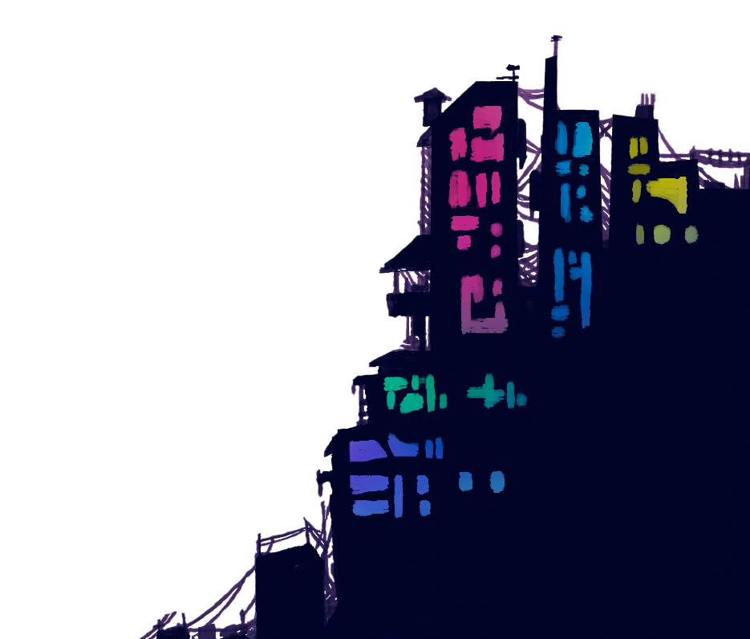

WELCOME
to the black files¿Que es?
un portafolio basico donde se almacena la mayoria de comisiones, arte, animaciones y demas que han alimentado al desarrollo de mis personajes y de su universo
¿porque?
para que asi y de manera mas sencilla se puedan encontrar todos mis proyectos, comisiones y arte sin miedo a que se pierdan
